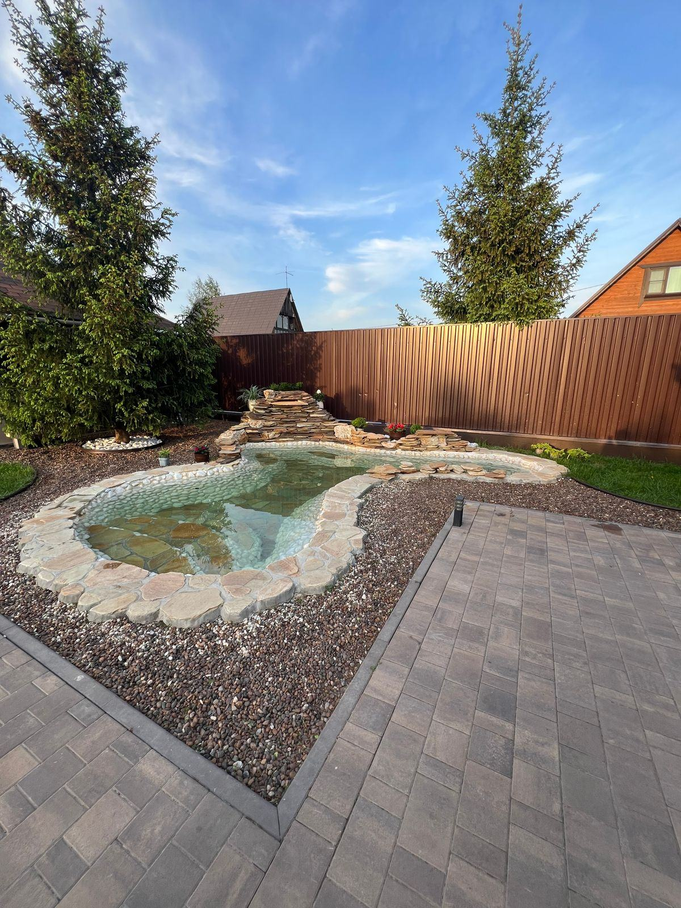

Un bassin de jardin est le projet d'eau le plus accessible : on peut en réaliser un pour 500 € un dimanche après-midi, ou en confier un de 15 000 € à un paysagiste. Entre les deux, ce sont les mêmes règles qui décident du résultat — profondeur, implantation, équilibre biologique. Voici ce qu'il faut savoir avant le premier coup de bêche.

Commençons par une vérité que peu de sites disent clairement : un petit bassin est plus difficile à réussir qu'un grand. Un volume important est stable — sa température varie lentement, ses paramètres d'eau amortissent les à-coups, son écosystème s'autorégule. Un bac de 200 litres, lui, chauffe de six degrés en une après-midi d'été, gèle en profondeur l'hiver et bascule au moindre excès de nourriture pour poissons. Si vous hésitez sur la taille, voyez toujours un peu plus grand que prévu : c'est le seul arbitrage que personne ne regrette.
Chaque solution a son domaine de pertinence. Le mauvais choix se paie généralement au bout de trois à cinq ans, quand il faut tout reprendre.
Une coque rigide en polyéthylène ou en polyester, de 150 à 1 500 litres, que l'on cale dans une fouille au sable. C'est la solution la plus rapide et la plus accessible en autoconstruction : un week-end suffit.
Ses limites : une forme imposée, souvent peu naturelle, des paliers de plantation étroits et une profondeur rarement suffisante pour hiverner des poissons. Idéal pour un point d'eau décoratif ou un petit bassin de moins de 5 m².
La référence pour tout bassin de forme libre. Cette membrane élastomère de 1 à 1,5 mm épouse n'importe quel modelé, se soude en cas de raccord et se donne 25 à 40 ans de durée de vie. Elle se pose sur un géotextile anti-poinçonnement.
Ses limites : il faut soigner le profil des berges, sinon la bâche reste visible au bord — le défaut n° 1 des bassins amateurs. Le liner PVC, moins cher, vieillit nettement moins bien aux UV.
Béton projeté ou banché, avec enduit d'étanchéité ou membrane. C'est le choix des bassins architecturés, des formes géométriques nettes et des margelles franches, ainsi que des grands bassins à koïs.
Ses limites : le budget, le besoin d'un professionnel et la sensibilité aux mouvements de terrain. Une fissure structurelle sur un bassin béton est une réparation lourde.
Bac en bois, en acier corten, en pierre reconstituée ou même une simple cuve habillée. Aucune excavation, un rebord à hauteur d'assise, et une sécurité appréciable quand de jeunes enfants fréquentent le jardin.
Ses limites : l'exposition thermique — un volume hors sol chauffe et gèle beaucoup plus vite. Notre page bassin hors sol détaille les précautions.
C'est ici que se jouent la survie des poissons, la stabilité de l'eau et la beauté des plantations. Trois cotes suffisent à cadrer un projet.
Une zone d'au moins 80 cm est indispensable pour que des poissons passent l'hiver sous la glace, en léthargie près du fond. Dans les régions à hivers marqués, visez 1 m à 1,20 m. Cette zone profonde stabilise aussi la température l'été.
Un palier à 20-30 cm pour les plantes de marécage et les oxygénantes, un palier à 40-60 cm pour les nénuphars. Prévoyez 30 à 40 cm de largeur : un palier trop étroit ne retient ni le substrat ni les paniers.
En dessous de 3 m², l'eau réagit à tout. À partir de 5 m² et 3 000 litres, l'équilibre se tient beaucoup mieux. Un bassin de 10 à 20 m² avec 1 m de profondeur est presque autonome une fois installé.
Dernier point souvent oublié : la berge en pente douce. Une plage de galets descendant progressivement dans l'eau sur un mètre de longueur permet aux oiseaux de boire, aux hérissons de ressortir s'ils tombent, et masque naturellement la bâche. C'est le détail qui distingue un bassin harmonieux d'un trou d'eau bordé de caoutchouc noir. Notre page aménagement de bassin traite ce sujet en profondeur.
Une erreur d'implantation ne se corrige qu'en recommençant. Cinq critères méritent une matinée de réflexion avant de tracer au sol.
Cinq à six heures par jour, idéalement le matin. Le plein soleil toute la journée favorise les algues et surchauffe l'eau ; l'ombre permanente empêche les nénuphars de fleurir.
À distance des feuillus caducs : bouleaux, érables, marronniers. Leurs feuilles chargent l'eau en matière organique et leurs racines peuvent perforer une bâche à terme.
Jamais dans un point bas où ruissellent les eaux de pluie du jardin, chargées d'engrais et de terre. Une légère surélévation du pourtour protège le bassin.
Vérifiez les réseaux enterrés avant de creuser, prévoyez une alimentation électrique protégée, et placez le bassin dans l'axe d'une fenêtre ou d'une terrasse : on le regarde plus qu'on ne s'en approche.
La réponse dépend entièrement d'une question : y aura-t-il des poissons ?
Un bassin bien planté, sans poissons, atteint son équilibre seul en une à deux saisons. Les plantes oxygénantes immergées — élodée, myriophylle, cératophylle — consomment les nutriments, les nénuphars ombragent la surface et limitent les algues, la faune s'installe spontanément.
Une petite pompe pour animer la surface reste utile contre la stagnation, mais aucune filtration mécanique n'est strictement nécessaire. C'est le bassin le plus économique et le plus vivant.
Des poissons produisent des déjections en continu. Il faut alors une pompe (capable de brasser le volume total toutes les 2 heures environ), un filtre biologique garni de mousses et de médias, et souvent une lampe UV contre l'eau verte.
Budget de l'ensemble : 300 à 2 000 € selon le volume. Règle de peuplement prudente : un poisson de 10 cm pour 100 litres, et jamais de koïs dans moins de 10 000 litres — c'est l'objet de notre page bassin à koïs.
Dans les deux cas, la végétation fait le gros du travail. Comptez environ un tiers de la surface plantée, en variant les étages : plantes de berge, de marécage, immergées et flottantes. Le détail des espèces figure sur notre page plantes aquatiques, et le dimensionnement des systèmes sur la page filtration & lagunage.
Fourchettes TTC indicatives. Les prix « pose comprise » supposent l'intervention d'un professionnel ; les prix « fourniture » correspondent à une autoconstruction.
| Formule | Surface / volume | Réalisation | Budget TTC |
|---|---|---|---|
| Bassin préformé | 1 à 5 m² | autoconstruction | 500 – 2 500 € |
| Bassin hors sol | 0,5 à 3 m³ | kit ou sur mesure | 800 – 5 000 € |
| Bassin EPDM simple | 5 à 10 m² | autoconstruction | 1 200 – 3 500 € |
| Bassin d'agrément aménagé | 5 à 20 m² | par un professionnel | 3 000 – 15 000 € |
| Bassin béton architecturé | 10 à 25 m² | par un professionnel | 150 – 350 €/m² |
| Cascade ou ruisseau | 2 à 8 m linéaires | option | 1 500 – 6 000 € |
| Filtration complète (avec poissons) | pompe + filtre + UV | option | 300 – 2 000 € |
| Piscine naturelle (pour comparaison) | 30 à 100 m² | par un professionnel | 30 000 – 80 000 € |
Un bassin de 3 m² se réalise très bien soi-même. Au-delà de 10 m², avec un dénivelé, une cascade ou une intégration paysagère travaillée, l'accompagnement d'un professionnel change la nature du résultat — et évite les reprises coûteuses.
Sur un bassin d'agrément réalisé par un professionnel, comptez environ 300 à 800 € par m² de plan d'eau selon la profondeur, le type d'étanchéité et le soin apporté aux berges. Les projets avec ruisseau, éclairage et terrasse dépassent régulièrement le haut de cette fourchette.
Terrassement et évacuation des terres, géotextile et étanchéité, profil des paliers, filtration si nécessaire, substrats, plantations avec la liste des espèces, finition des berges et mise en eau. Un devis global sans détail n'est pas comparable.
Obtenir un devis détaillé →Pour un bassin d'agrément, un paysagiste habitué aux points d'eau suffit. Pour un bassin à koïs ou une baignade, il faut un spécialiste. Nous transmettons votre demande à un seul partenaire de votre région, qui vous rappelle sous 24 h ouvrées.
Notre rôle exact →Côté formalités, la règle générale est simple : moins de 10 m², aucune démarche dans la plupart des cas ; de 10 à 100 m², déclaration préalable de travaux ; au-delà de 100 m², permis de construire. Votre plan local d'urbanisme peut imposer des reculs par rapport aux limites séparatives ou des contraintes d'aspect : un passage en mairie avant de creuser reste la bonne pratique. Voir la page réglementation & déclaration.
Décrivez votre jardin en 2 minutes, un professionnel partenaire vous répond sous 24 h.